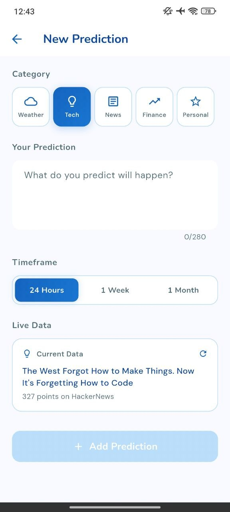
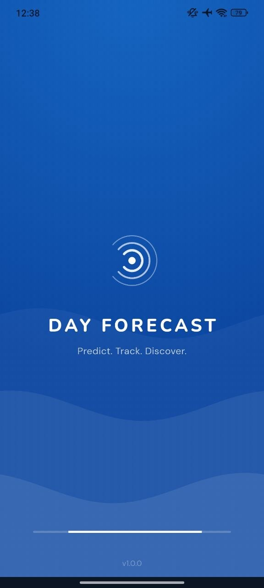
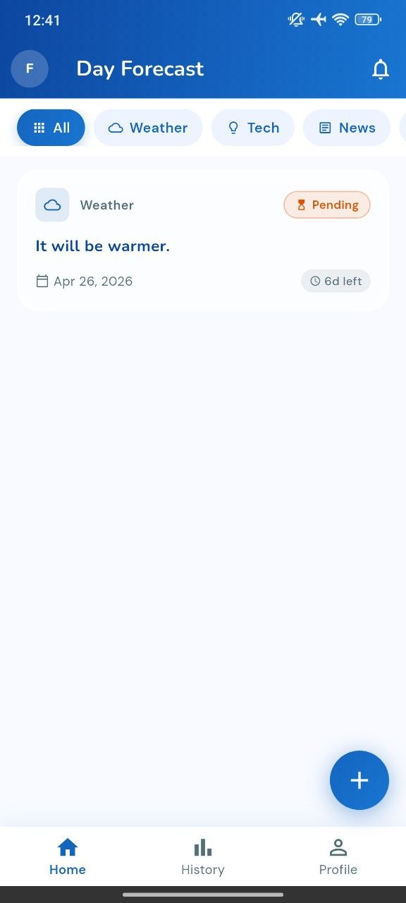
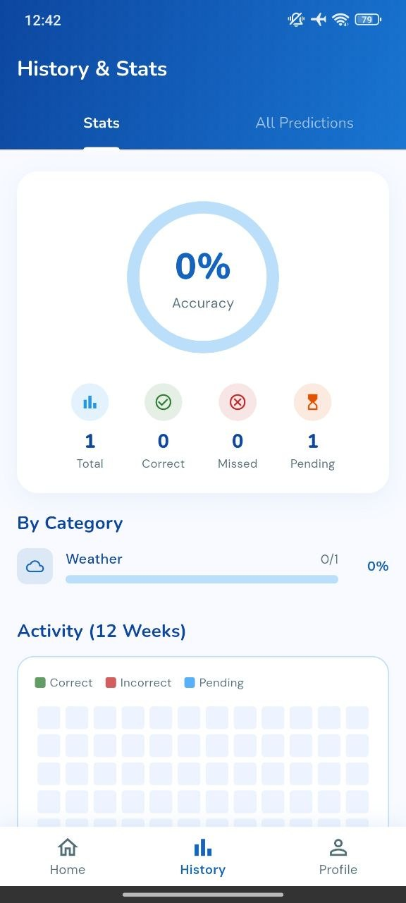
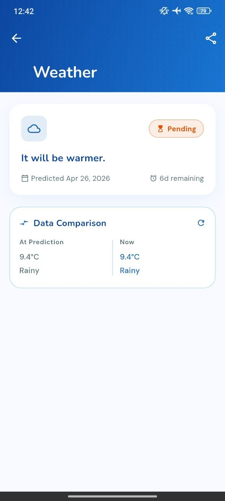
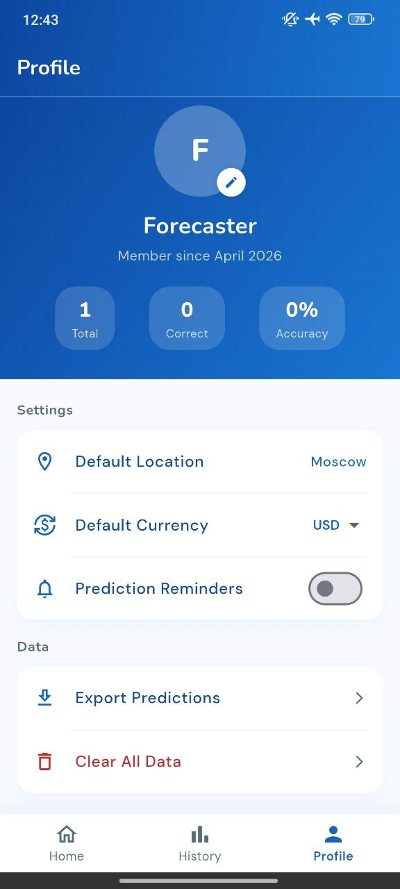

01
Prediction Builder
Create short predictions with category, timeframe, and live data context.
PolyMarkt Day Forecast helps you create predictions, compare live data, track accuracy, review history, and keep your forecasting profile organized in a calm premium interface.



Premium features
Create predictions across daily life categories, connect them with real-world data, and review your accuracy in a refined visual dashboard.
Create short predictions with category, timeframe, and live data context.
Compare your forecast with current weather, tech, news, finance, or personal data.
Track total predictions, correct results, missed forecasts, pending items, and accuracy.
Move between All, Weather, Tech, and News to keep predictions organized.
Manage location, currency, reminders, exports, and account prediction totals.
A light, clean, premium visual style with calm gradients and polished cards.
Forecasting engine
The app is built around a simple loop: write what you think will happen, select a category, choose a timeframe, attach live data, and later compare the result with reality.

Screen showcase
A curated preview of the strongest app moments: home, new prediction, saved forecast, detail comparison, and profile.


Why it feels expensive
PolyMarkt Day Forecast avoids visual noise. It uses soft cards, rounded controls, bright blue focus states, and spacious layouts to make prediction tracking feel simple and premium.
See whether your predictions become correct, missed, or pending.
Track forecasts for weather, technology, news, finance, and personal plans.
History stats and profile totals help you understand your forecasting habits.
Workflow
Select Weather, Tech, News, Finance, or Personal.
Add a short forecast with a clear timeframe.
Review current context and later compare it with what happens.
Use history, stats, and profile totals to measure progress.
Highlights
The experience is simple enough for quick predictions and detailed enough to review patterns over time.
“The interface feels clean and premium, especially the prediction flow.”
Daily user“I like how categories and live data make every forecast feel more grounded.”
Forecast tracker“The history dashboard makes prediction tracking easy to understand.”
App userDownload now
Download PolyMarkt Day Forecast and track your forecasts with live data, accuracy stats, categories, and a premium mobile experience.